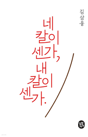

베스트셀러





AI 추천
구매 목록, 감명 깊게 읽은 도서 등
사용자 활동 데이터 기반 인공지능 도서 추천


지금 이 쓰레드
최근 사람들이 많이 공감한 게시글입니다

기억에 남는 첫 문장
책을 펼치자마자 시선을 사로잡았던 첫 문장에 대해 이야기해 봅니다.
다시 읽고 싶은 순간
같은 책을 두 번째 읽을 때 새롭게 발견한 장면들을 나누어 주세요.

나만의 독서 루틴
매일 조금씩 책을 읽기 위해 실천하고 있는 작은 습관을 소개합니다.
주인공의 선택을 생각하며
이야기의 갈림길에서 여러분이라면 어떤 선택을 했을지 궁금합니다.

오래 남은 책 속 풍경
한 장면의 묘사가 오래도록 머릿속에 남았던 경험을 공유합니다.

이번 달의 추천 도서
최근 읽은 책 중 한 권만 추천한다면 무엇을 고르시겠어요?